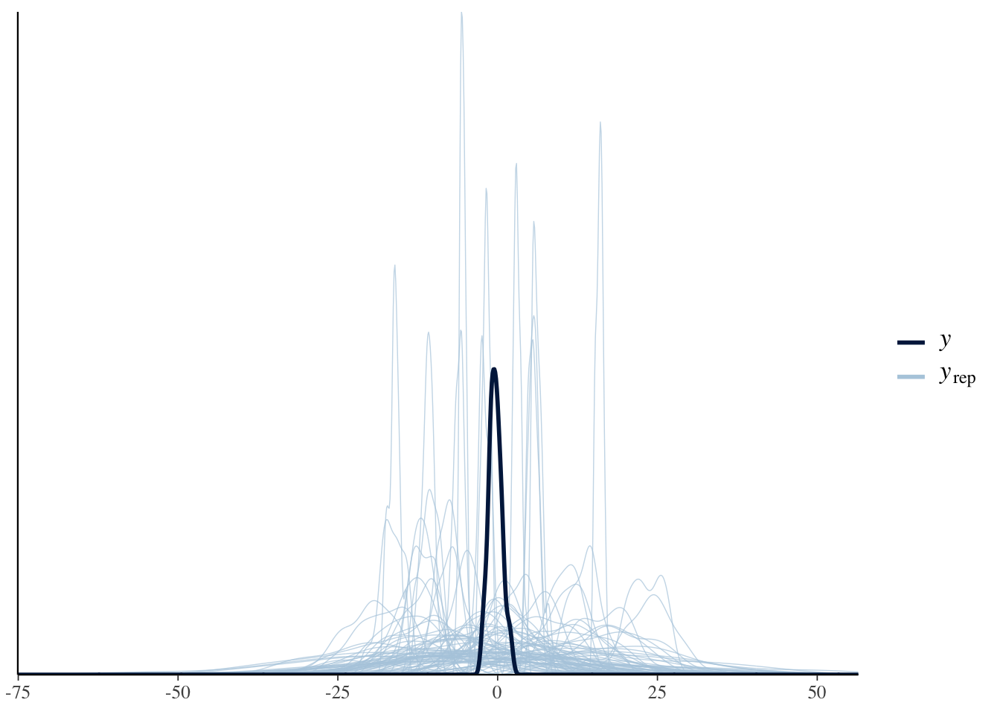
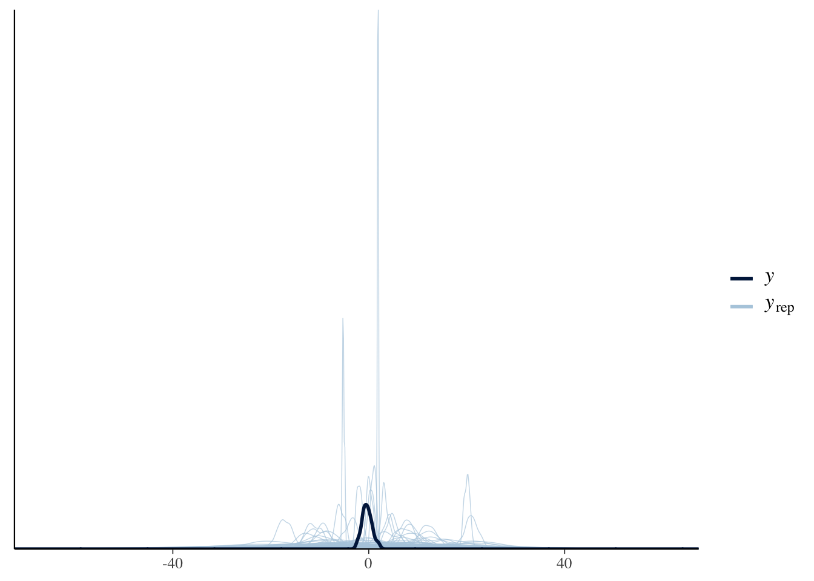
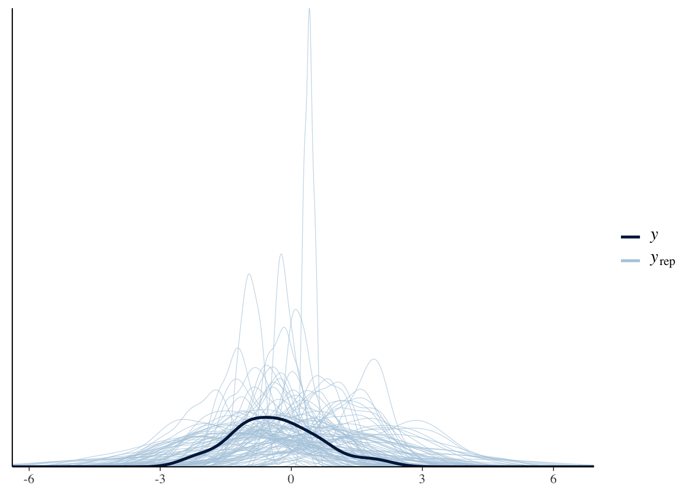
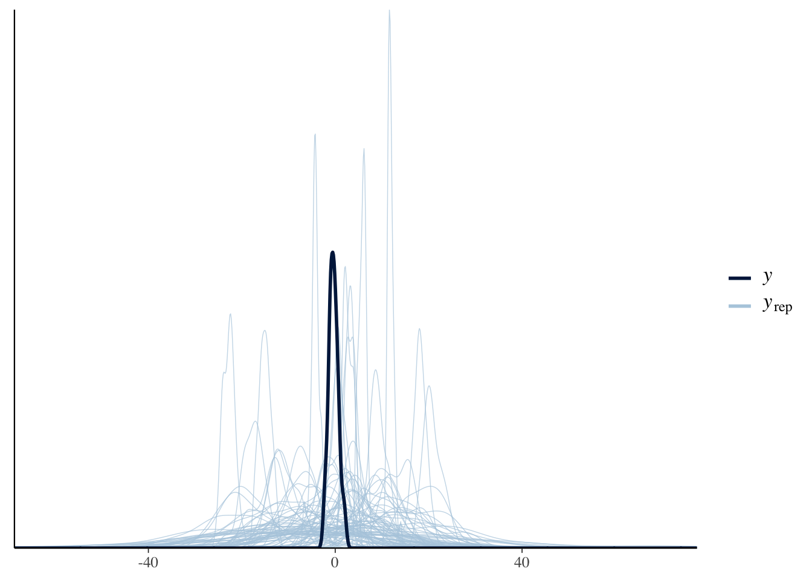
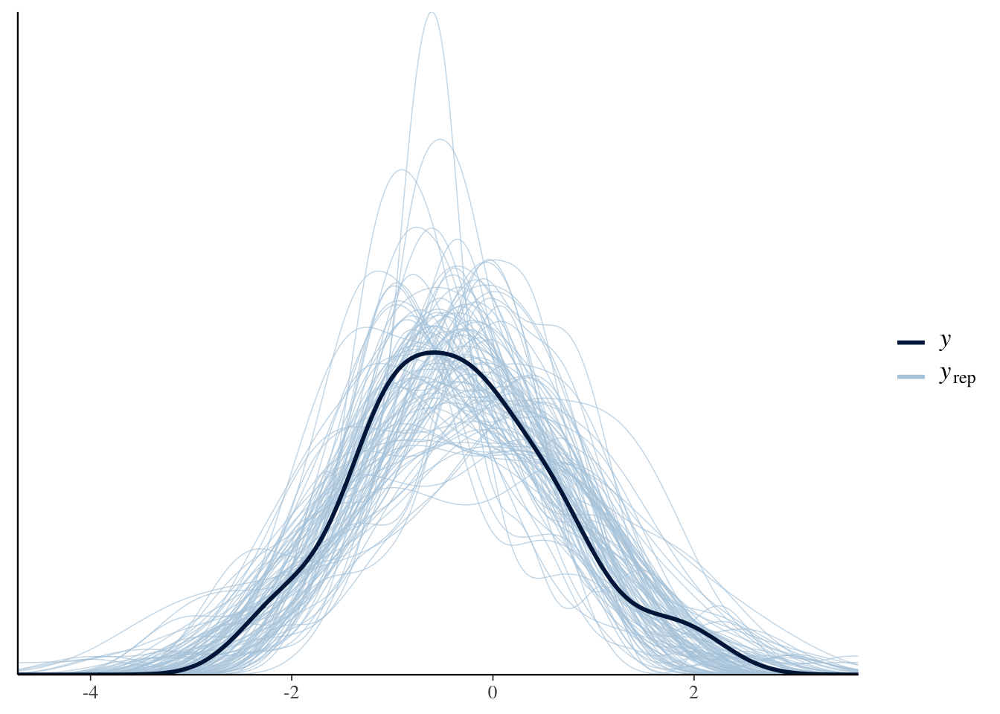
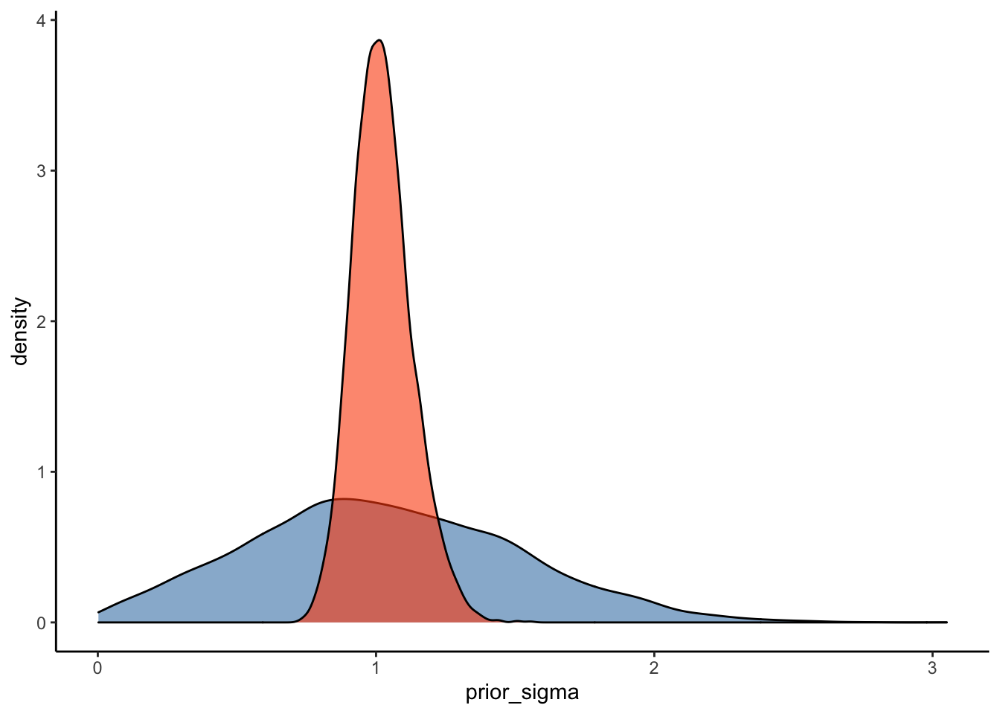

Chapter 2 Modeling your outcome: Intercepts-only Model
2.1 Video on Intercepts-Only Model
After watching the video we recommend you download the Markdown file and go through it in Rstudio:
- https://github.com/4CCoxAU/PriorsWorkshop/blob/08ea1968db8114690b04e839502ea5909300a62f/01-intro.Rmd
Here the data
The content of the markdown is reproduced below.
2.2 Hands-on Exercises
Let’s start by loading the required packages and data:
#if you don't have the pacman package loaded on your computer, uncomment the next line, install pacman, and load in the required packages
#install.packages('pacman')
#load the required packages:
pacman::p_load(tidyverse,
glue,
data.table,
dplyr,
moments,
tidybayes,
ggplot2,
ggridges,
plyr,
ellipse,
brms,
cowplot,
viridis)The data is avaiable here:
Download vowel_space_area_data.csv
Read in the data:
d <- read.csv('vowel_space_area_data.csv')
glimpse(d) # see below for an explanation of the different variables## Rows: 48
## Columns: 7
## $ X <int> 1, 2, 3, 4, 5, 6, 7, 8, 9, 10, 11, 12, 13, 14, 15, 16, 1…
## $ Subject <chr> "AF", "AN", "CL", "DM", "IA", "JA", "JE", "KA", "KV", "L…
## $ Register <chr> "ADS", "ADS", "ADS", "ADS", "ADS", "ADS", "ADS", "ADS", …
## $ ArticulationS <dbl> 0.76015464, -1.28956792, -0.85914839, -0.81478879, 0.797…
## $ ChildSex <chr> "m", "m", "f", "m", "f", "m", "f", "m", "m", "m", "m", "…
## $ ChildAge <int> 20, 22, 16, 12, 23, 24, 21, 14, 16, 16, 12, 16, 23, 12, …
## $ First_child <chr> "No", "Yes", "No", "No", "No", "Yes", "Yes", "No", "Yes"…2.2.1 Introduction to the data
Our research question concerns the hyperarticulation hypothesis of infant-directed speech. Do caregivers produce more peripheral vowels in infant-directed speech (IDS) compared to adult-directed speech (ADS)? To answer this question, we manually analysed 9267 extracted vowel tokens from individual caregivers’ IDS and ADS. In order eliminate inter-individual differences in formant values that occur due to physiological characteristics, we first z-score-normalised the formant data according to participant and then computed the total area of each caregiver’s ADS and IDS vowel space. We used this measure to calculate a standardised mean difference score: Cohen’s d.
The dataset we will analyse here consists of the following information:
- Subject (i.e. unique participant pseudonym),
- Register (i.e. the speech style used - adult-directed speech (ADS) vs. infant-directed speech (IDS)),
- ArticulationS (i.e. the standardized dependent variable),
- ChildSex (i.e. male vs. female),
- ChildAge (i.e. from 11 m to 24 m),
- First_child (whether this is the caregiver’s first child).
Note that, as detailed in the video, ArticulationS is a standardized variable, that is, we centered it (so that the mean is 0) and divided it by the standard deviation (so that the standard deviation is 1). Standardizing the outcome variable often (but not always!) makes setting priors easier, since we know much about which standardized effect sizes we should expect.
2.2.2 Weakly Informative Priors
Let’s start by building an intercepts-only model with ArticulationS as our dependent variable. We’ll use the function bf() to specify the structure of this first model as follows:
# Articulation_f1 indicates our first formula to model Articulation
Articulation_f1 <- bf(ArticulationS ~ 1)Now that we have our model formula in place, we can use the function get_prior() to tell us which priors need to be specified for this model structure. This function also provides suggestions for default priors:
get_prior(Articulation_f1,
data = d,
family = gaussian)## prior class coef group resp dpar nlpar bound source
## student_t(3, -0.4, 2.5) Intercept default
## student_t(3, 0, 2.5) sigma defaultThe output of the above function tells us that we need to specify a prior for the intercept (i.e. ‘Intercept’) and the residual variation (i.e. ‘sigma’). This output also provides suggestions for priors (e.g., student_t(3, -0.2, 2.5) for the Intercept), but let’s ignore those for now.
Let’s start by specifying weakly informative Gaussian priors for the intercept and sigma, centered at 0 with a standard deviation of 10. These priors allow for a large range of values for the intercept and residual variation (e.g. with this prior, we are specifying that we expect 95 % of the distribution to be between -20 and 20). The tails of these distributions thus represent very large (and unrealistic) values for our parameters of interest - but let’s see where these weakly informative priors take us.
weakly_informative_priors <- c(
prior(normal(0, 10), class = Intercept),
prior(normal(0, 10), class = sigma))Before building an actual model of the hyperarticulation data, we can first run a model to determine whether our prior expectations generate appropriate values. This is known as a prior predictive check. The following code samples from the prior distributions we have specified above, without taking the actual data into account:
#I've provided comments on the parameters that were not introduced to you in the lecture,
#so you have an idea of what they do:
Articulation_m1_prior0 <-
brm(
Articulation_f1,
data = d,
family = gaussian,
prior = weakly_informative_priors,
sample_prior = "only", #this term specifies that the model only samples from the
#priors specified.
file = "Articulation_m0_prior0", #this parameter saves the model in your working
#directory to allow you to load the model at a later point.
#refit = "on_change", # this parameter checks whether you fit the model already. If you have and nothing changed since, it just loads the model. If anything (data, formula, priors) changed, the model is refit
iter = 5000, #this iter parameter specifies the total number of iterations of the
#Markov Chain Monte Carlo (MCMC) algorithm. We run prior predictive checks
#with a small number of iterations as we are not interested in the statistical
#results - we simply use these models to plot samples from our specified priors.
warmup = 1000, #this parameter specifies number of warmup iterations. Warmup iterations are used to "learn" the optimal hyper-parameters (settings) to explore the solutions (posterior space) to your problem
cores = 2, # Number of CPU cores to use when executing the chains - 2 should be more than
# enough, but you can increase this if the models are taking too long to run.
chains = 2, # Number of Markov chains (defaults to 4).
backend = "cmdstanr", #feel free to uncomment this and the following line if you have
#installed the “cmdstanr” package - runtime will be a little faster.
threads = threading(2),
control = list(adapt_delta = 0.99, max_treedepth = 20)) #these parameters control the MCMC
#sampler’s behaviour in various ways
#(e.g., step size). You can leave them like this for now.Let’s plot some predictions from our priors by using the following pp_check() function. This plot shows the predictions from our prior distributions in blue and the actual data in black. This allows us to check whether our specifications of prior distributions are appropriate.
pp_check(Articulation_m1_prior0, ndraws = 100)
Run the same pp_check() function above a couple of times and observe the results. You’ll notice that the prior predictive plots vary each time you run the code; that’s because the pp_check() function takes random samples from the model we specified above. It’s therefore good practice to run the pp_check() function a couple of times to make sure that the plots show a pattern in the prior predictions of the model.
Let’s compare the predictions from our priors (in blue) with those of the data (in black); the predictions appear to have a much larger (and unrealistic) range than that shown by the data. Before moving on, try to answer the following question:
Q1: How should we modify our priors to obtain more realistic predictions from our prior distributions?
Answer:
2.2.3 More Informative Priors
As mentioned above, by specifying the standard deviations of the above priors as 10, we are saying that we expect approximately 95% of the distribution of standardized measures (i.e. ArticulationS) to be between -20 and 20 sds from the mean; however, given our prior knowledge about the measure, a distance of 20 sds from the mean would be extremely unrealistic. Let’s try to capture our prior knowledge of the measure in our specification of the priors.
What would be a reasonable ArticulationS value to expect given our prior knowledge about effect sizes? Effect sizes are usually distributed around ± 2 - to capture this, we can specify a standard deviation of 1 (i.e. with this, we expect approximately 95 % of the distribution to fall within ± 2 x SD ). For the standard deviation of the residual variation, sigma, we expect this to be on the same scale, and as discussed in the slides, we can specify a mean of 1 and standard deviation of 0.5:
more_informative_priors <- c(
prior(normal(0, 1), class = Intercept),
prior(normal(1, 0.5), class = sigma))Similar to before, then, let’s run a prior predictive check to determine whether these priors provide more appropriate values:
Articulation_m1_prior <-
brm(
Articulation_f1,
data = d,
family = gaussian,
prior = more_informative_priors,
sample_prior = "only",
iter = 5000,
warmup = 1000,
backend = "cmdstanr",
threads = threading(2),
cores = 2,
chains = 2,
file = "Articulation_m1_prior",
#refit = "on_change",
control = list(adapt_delta = 0.99, max_treedepth = 20))Q2: Before you take a look at the prior predictive check plots, how do you expect this model to differ from that of the first and why?
Answer:
# Prior predictive check for the weakly informative priors:
pp_check(Articulation_m1_prior0, ndraws = 100)
# Prior predictive check for the more informative priors:
pp_check(Articulation_m1_prior, ndraws = 100)
2.2.4 Intercepts-Only Model
Now that our priors appear to be within the order of magnitude of ArticulationS that we expect (i.e. not 10 times more than the range we expect), let’s use these priors to build an intercepts-only model for the actual data:
Articulation_m1 <-
brm(
Articulation_f1,
data = d,
save_pars = save_pars(all = TRUE),
family = gaussian,
prior = more_informative_priors,
file = "Articulation_m1",
#refit = "on_change",
sample_prior = T,
iter = 5000,
warmup = 1000,
cores = 2,
chains = 2,
backend = "cmdstanr",
threads = threading(2),
control = list(
adapt_delta = 0.99,
max_treedepth = 15 ))Now that we have our first model, we can conduct posterior predictive checks to make sure that our model has captured the data.
pp_check(Articulation_m1, ndraws = 100)
The plot indicates that our model captures the overall distribution of our dependent variable (although there is a lot of uncertainty in model predictions).
Another way to ensure that our model represents a good fit to the data is to plot prior-posterior update plots. These plots show how our model updates from our priors after seeing the data. To plot these data, we’ll use as_draws_df() to sample from the prior and posterior distributions for the relevant parameters (i.e. ‘Intercept’ and ‘sigma’ in this case) from the above model.
2.2.5 Prior-Posterior Update Plots
#overview of model parameters:
variables(Articulation_m1)## [1] "b_Intercept" "sigma" "Intercept" "prior_Intercept"
## [5] "prior_sigma" "lprior" "lp__"#Sample the parameters of interest:
Posterior_m1 <- as_draws_df(Articulation_m1)
#Plot the prior-posterior update plot for the intercept:
ggplot(Posterior_m1) +
geom_density(aes(prior_Intercept), fill="steelblue", color="black",alpha=0.6) +
geom_density(aes(b_Intercept), fill="#FC4E07", color="black",alpha=0.6) +
theme_classic()
#Plot the prior-posterior update plot for sigma:
ggplot(Posterior_m1) +
geom_density(aes(prior_sigma), fill="steelblue", color="black",alpha=0.6) +
geom_density(aes(sigma), fill="#FC4E07", color="black",alpha=0.6) +
theme_classic()
These prior-posterior update plots (with the prior in blue and the posterior in orange) indicate that our model has learned after seeing the data - great stuff! To check your intuitions, try to answer the following question:
Q3: How do you think these prior-posterior update plots would compare with those of the weakly informative priors we specified above (repeated below)?
weakly_informative_priors <- c( prior(normal(0, 10), class = Intercept), prior(normal(0, 10), class = sigma))
Answer:
2.2.6 Interpreting Model Output
Now that we have checked (via posterior predictive checks and prior-posterior update plots) that our model captures relevant information, let’s have a look at the model output:
summary(Articulation_m1)## Family: gaussian
## Links: mu = identity; sigma = identity
## Formula: ArticulationS ~ 1
## Data: d (Number of observations: 48)
## Draws: 2 chains, each with iter = 5000; warmup = 1000; thin = 1;
## total post-warmup draws = 8000
##
## Population-Level Effects:
## Estimate Est.Error l-95% CI u-95% CI Rhat Bulk_ESS Tail_ESS
## Intercept -0.33 0.15 -0.62 -0.04 1.00 3753 3104
##
## Family Specific Parameters:
## Estimate Est.Error l-95% CI u-95% CI Rhat Bulk_ESS Tail_ESS
## sigma 1.02 0.11 0.84 1.26 1.00 4468 3947
##
## Draws were sampled using sample(hmc). For each parameter, Bulk_ESS
## and Tail_ESS are effective sample size measures, and Rhat is the potential
## scale reduction factor on split chains (at convergence, Rhat = 1).The model output gives a summary of the model parameters and then provides estimates of ‘Population-level Effects’ and ‘Family Specific Parameters.’ Let’s go through the ‘Population-level Effects’ and ‘Family Specific Parameters’ from top to bottom and left to right:
- The Estimate(s) obtained for the Intercept is centered on approx. -0.34 and has an estimated error of 0.15. The 95 % credible interval is
approximately [-.63; -.04]). - In the ‘Family-Specific Parameters’ section, the residual variation (i.e., sigma) is estimated to be approximately 1.02 [0.85; 1.25].
- The Rhat values provide information about the convergence of the algorithm. Rhat values close to 1 suggest that the model has converged.
- The Bulk_ESS and Tail_ESS (effective sample size (ESS)) capture the sampling efficiency in the bulk and tails of the distribution.
2.2.7 Bonus Question
Try to adapt the code for Articulation_m0 and run a model with the weakly-informative priors: